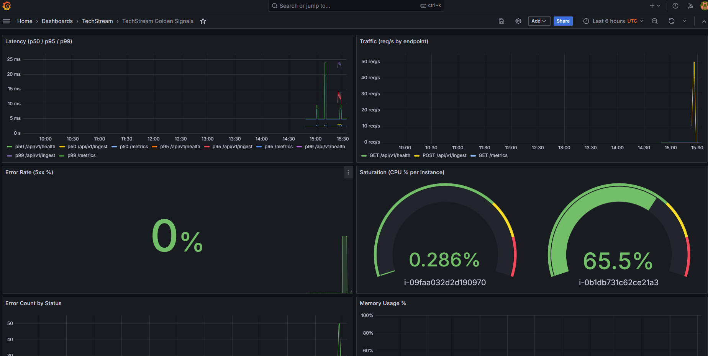
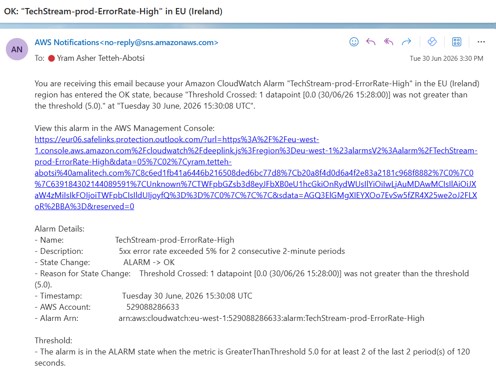
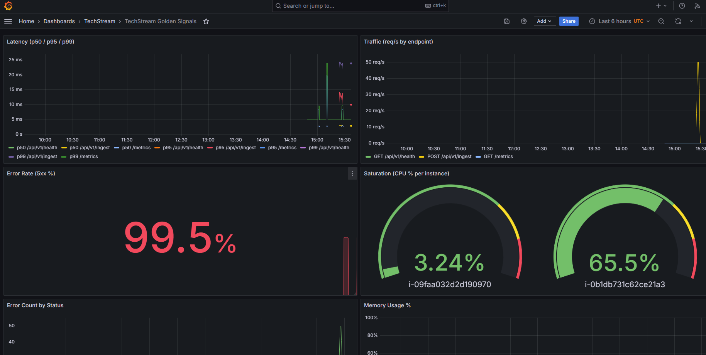
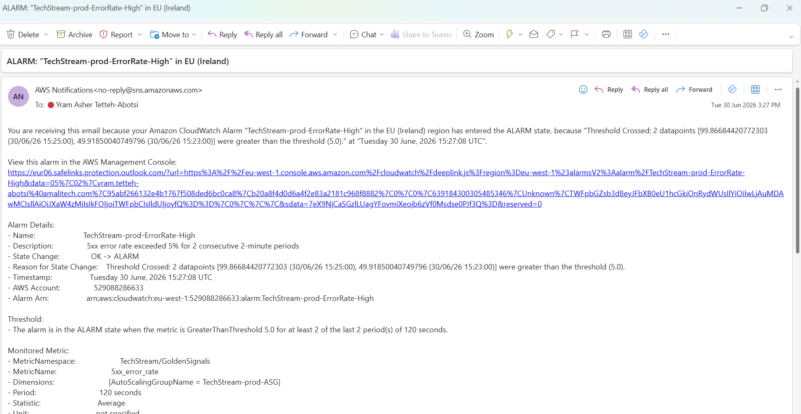
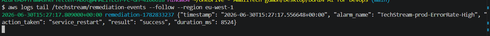
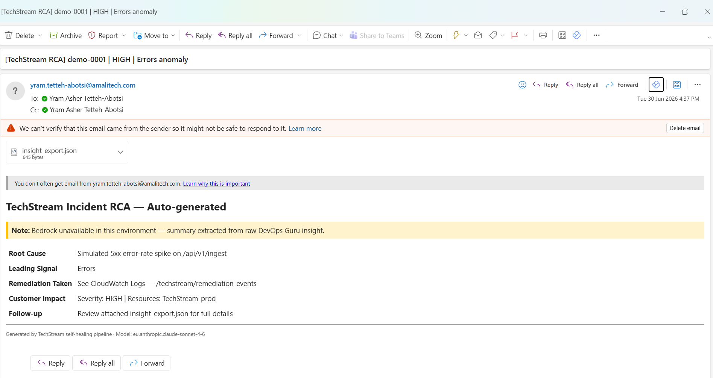

A visual walkthrough — how the platform detects a failure, fixes itself, and explains the incident, with no human in the loop.
TechStream is a Flask data-ingestion API running on a private EC2 Auto Scaling Group. Its health is watched continuously; when it degrades, the system detects the fault (CloudWatch alarms), remediates it automatically (EventBridge → Lambda), and explains it (DevOps Guru → Bedrock → email). This page walks the full loop using screenshots captured during a real chaos test.
Observability is provided by self-hosted Prometheus + Grafana on a public monitoring EC2; metrics come from the app and from node_exporter via EC2 service discovery. The app fleet is fully private — no ALB, no NAT — reachable only through SSM and VPC endpoints.
At rest, the ingestion API serves traffic normally. The Golden Signals dashboard is green and the error-rate alarm sits in OK.


TechStream-prod-ErrorRate-High in OK. The alarm watches the 5xx_error_rate metric the app publishes every 60 seconds.A chaos script is run on an app instance via SSM (the fleet is private, so there's no public endpoint to hit). It floods localhost:8000/api/v1/ingest with malformed requests, each returning HTTP 500, driving the error rate past the alarm threshold.


The alarm state-change is routed by an EventBridge rule (filtered to state = ALARM) straight to the Remediator Lambda — the single, deterministic trigger. The Lambda inspects the ASG and chooses an action: if instances are missing it scales out; otherwise it restarts the techstream service over SSM and polls the command result to confirm success.

/techstream/remediation-events. The Lambda records each action as structured JSON: the alarm name, action_taken (here a service restart), the result, and how long it took. This is the proof the system healed itself.Once the service restarts and the malformed traffic stops, the 5xx rate falls back to baseline and CloudWatch returns the alarm to OK — the dashboard goes green again. End to end, detection through recovery is a few minutes with no human involvement.
Independently of the fast remediation path, Amazon DevOps Guru analyses the anomaly and publishes an insight to a dedicated -insights SNS topic. The RCA Summariser Lambda turns that insight into a readable root-cause email — using Amazon Bedrock (Claude) when available, and falling back to a structured summary of the raw insight when the account's policy blocks Bedrock.

bedrock_available metric records whether the AI narrative or the fallback was used, so the degraded path is observable.bedrock:InvokeModel. The Lambda detects the denial, sends the fallback RCA email instead, and emits bedrock_available = 0 — so the incident report always arrives, with or without the AI summary.| Stage | Screenshot | What it demonstrates |
|---|---|---|
| Baseline | Grafana OK · ErrorRate OK | Live observability; healthy steady state |
| Fault | Grafana high error rate · Alarm ALARM | Detection — custom metric & alarm react to a real injected failure |
| Remediation | Remediation event log | Automated, audited self-healing via EventBridge + Lambda + SSM |
| Recovery | ErrorRate back to OK | Closed loop — system returns to health unattended |
| RCA | DevOps Guru insight | AI-assisted incident analysis with a resilient fallback |
Private app fleet (no public IP, no SSH, no NAT); SSM-only administration; IMDSv2 enforced; least-privilege IAM; all AWS access via VPC endpoints; Grafana restricted to allow-listed IPs.
Everything is Terraform; a pytest suite and a GitHub Actions CI pipeline (fmt/validate + tests + tfsec) back the code; a chaos harness proves the healing on demand.